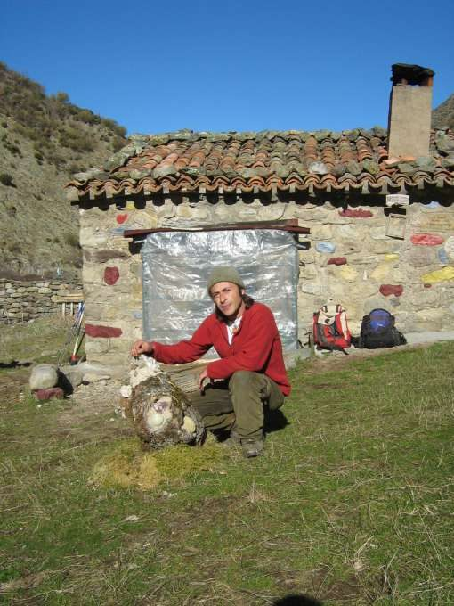
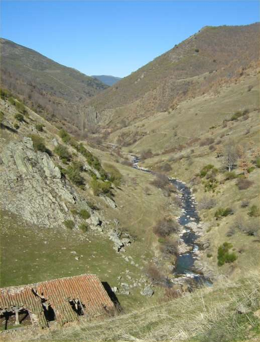

Paraíso Urbión
Viniegra de Arriba - Viniegra de Abajo · comarca del Najerilla
- Distancia10 kmida y vuelta
- Desnivel160 m
- Tiempo orientativo3 h
- Dificultadbaja
- Época recomendadaprimavera, verano, otoño.
- Terrenosenda
Sergio es el único habitante de “Paraíso Urbión”, un lugar que seguramente guarda la esencia de todo lo que es importante cuando queremos acercarnos a nuestra Felicidad. Sergio nos cuenta: A una hora de camino a los Picos de Urbión, a 1200 metros de altitud, se encuentra el refugio de la Paz y el Amor, ¡Vuestro Hogar! Un humilde refugio de pastores que he ido arreglando para compartirlo con vosotros.
Yo soy Sergio - Águila Solitaria y hace 5 años dejé todo en Madrid: familia, trabajo, amigos, etc. y me fui de voluntario a Galicia para colaborar en la limpieza de los restos de chapapote provocados por el hundimiento del Prestige. Después comencé una marcha a pie desde Madrid hasta Santiago de Compostela recorriendo cada pueblo y ciudad, colegios e institutos, llevando un mensaje de Paz y Respeto a la Naturaleza.
Y desde hace 33 lunas vivo en este maravilloso y Sagrado Lugar: “Paraíso Urbión”; nuestro tesoro a preservar. Y os invito a venir y compartir nuestro Amor por un Mundo Mejor. Otro Mundo Mejor es muy posible. Paz, Amor y Naturaleza


Recorrido
Llegar a “Paraíso Urbión” es sumamente sencillo. A pie de carretera, a mitad de camino entre Viniegra de Abajo y Viniegra de Arriba se encuentra el lugar conocido como “Trambosríos”, punto en el que se unen las aguas de los ríos Viniegra y Urbión. Desde este lugar parte un bellísimo sendero que remonta el barranco del río Urbión manteniéndose siempre en su margen derecho.
En poco más de 45 minutos pasaremos junto a una hermosa cascada que se descuelga entre las rocas. Diez minutos más y llegaremos a la Ermita de San Millán, y en otros diez minutos a “Paraíso Urbión”.


{kind=link}
{kind=link}